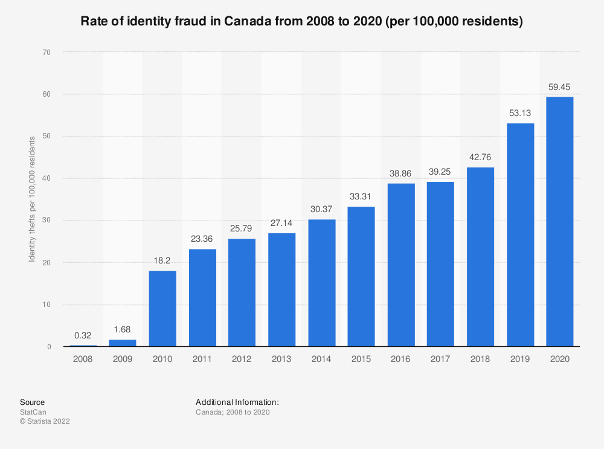

- Around 49 million individuals in the US have fell victim to ID theft and fraud in 2020
- Identity theft stats reveal people in South East Asia are generally worried about ID theft, believing it is a real threat
- The financial toll of identity dropped from $16 million in 2012 to $10 million in 2014
- 2019 fraud statistics for Canada show that there were 52 victims per 100,000 citizens
- Identity theft Canada statistics from 2020 show that COVID-19 is often used as a pretext
- Medical identity theft in Canada is still a relatively unknown issue, as only 11% of the population is aware that fraudsters can alter medical records
